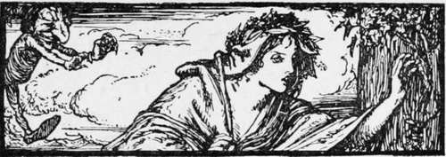
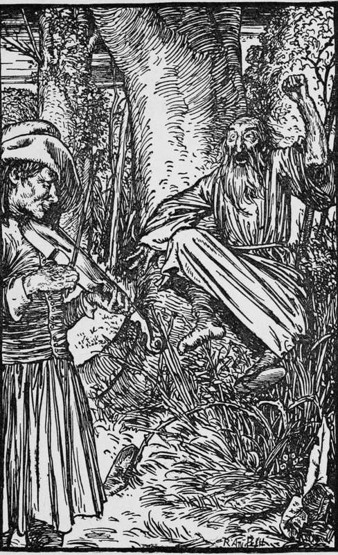

The Jew In The Bush
Description
This section is from the book "Household Tales by Brothers Grimm", by Brothers Grimm. Also available from Amazon: Household Tales by Brothers Grimm.
The Jew In The Bush
A faithful servant had worked hard for his master, a thrifty farmer, for three long years, and had been paid no wages. At last it came into the man's head that he would not go on thus any longer: so he went to his master and said, "I have worked hard for you a long time, and without pay too. I will trust to you to give me what I ought to have for my trouble; but something I must have, and then I must take a holiday."
The farmer was a sad miser, and knew that his man was simple-hearted; so he took out three crowns, and thus gave him a crown for each year's service. The poor fellow thought it was a great deal of money to have, and said to himself, "Why should I work hard and live here on bad fare any longer ? Now that I am rich I can travel into the wide world, and make myself merry." With that he put his money into his purse, and set out, roaming over hill and valley.
As he jogged along over the fields, singing and dancing, a little dwarf met him, and asked him what made him so merry. "Why, what should make me downhearted?" said he ; "I am sound in health and rich in purse, what should I care for ? I have saved up my three years earnings, and have it all safe in my pocket." " How much may it come to ?" said the manikin. " Three whole crowns," replied the countryman. "I wish you would give them to me," said the other; "I am very poor." Then the good man pitied him, and gave him all he had; and the little dwarf said, " As you have such a kind heart, I will grant you three wishes—one for each crown; so choose whatever you like." Then the countryman rejoiced at his good luck, and said, " I like many things better than money: first, I will have a bow that will bring down every thing I shoot at; secondly, a fiddle that will set everyone dancing that hears me play upon it; and thirdly, I should like to be able to make every one grant me whatever I ask." The dwarf said he should have his three wishes ; so he gave him the bow and fiddle, and went his way.
Our honest friend journeyed on his way too; and if he was merry before, he was now ten times more so. He had not gone far before he met an old Jew. Close by them stood a tree, and on the topmost twig sat a thrush, singing away most joyfully. " Oh, what a pretty bird!" said the Jew: " I would give a great deal of my money to have such a one." " If that's all," said the countryman, "I will soon bring it down." Then he took up his bow—off went his arrow—and down fell the thrush into a bush that grew at the foot of the tree. The Jew, when he saw he could have the bird, thought he would cheat the man; so he put his money into his pocket again, and crept into the bush to find the prize. But as soon as he had got into the middle, his companion took up his fiddle and played away; and the Jew began to dance and spring about, capering higher and higher in the air. The thorns soon began to tear his clothes, till they all hung in rags about him; and he himself was all scratched and wounded, so that the blood ran down. " Oh, for Heaven's sake!" cried the Jew, "mercy, mercy, master! pray stop the fiddle! What have I done to be treated in this way?" "What hast thou done? Why thou hast shaved many a poor soul close enough," said the other; "thou art only meeting thy reward." So he played up another tune yet merrier than the first. Then the Jew began to beg and pray; and at last he said he would give plenty of his money to be set free. But he did not come up to the musician's price for some time, and he danced him along brisker and brisker. The higher the Jew danced, the higher he bid; till at last he offered a round hundred crowns, that he had in his purse, and had just gained by cheating some poor fellow. When the countryman saw so much money, he said, " I will agree to the bargain." So he took the purse, put up his fiddle, and travelled on, very well pleased with his bargain.
Meanwhile, the Jew crept out of the bush, half naked and in a piteous plight; and began to ponder how he should take his revenge, and serve his late companion some trick. At last he went to the judge, and said that a rascal had robbed him of his money, and beaten him soundly into the bargain; and that the fellow who did it carried a bow at his back, and had a fiddle hanging round his neck. Then the judge sent out his bailiffs to bring up the man, wherever they should find him; and so the poor countryman was soon caught, and brought up to be tried.
The Jew began to tell his tale, and said he had been robbed of his money. " Robbed, indeed! " said the countryman; "why you gave it me for playing you a tune, and teaching you to dance! " But the judge told him that was not likely; and that the Jew, he was sure, knew better what to do with his money. So he cut the matter short by sending him off to the gallows.
And away he was taken; but as he stood at the foot of the ladder he said, "My Lord Judge, may it please your worship to grant me but one boon ? " " Anything but thy life," replied the other. "No," said he, "I do not ask my life; only let me play one tune upon my fiddle for the last time." The Jew cried out, "Oh, no! no! no! for Heaven's sake don't listen to him! don't listen to him! " But the judge said, "It is only for this once, poor man! he will soon have done." The fact was, he could not say no, because the dwarf's third gift enabled him to make every one grant whatever he asked, whether they liked it or not.
Then the Jew said, "Bind me fast, bind me fast, for pity's sake! " But the countryman seized his fiddle, and struck up a merry tune; and at the first note, judge, clerks, and gaoler, were set a-going; all began capering, and no one could hold the Jew. At the second note the hangman let his prisoner go, and danced also; and by the time he had played the first bar of the tune all were dancing together—judge, court, Jew, and all the people who had followed to look on. At first the thing was merry and joyous enough; but when it had gone on awhile, and there seemed to be no end of either playing or dancing, all began to cry out, and beg him to leave off: but he stopped not a whit the more for their begging, till the judge not only gave him his life, but paid him back the hundred crowns.
Then he called to the Jew, and said, "Tell us now, you rogue, where you got that gold, or I shall play on for your amusement only." "I stole it," said the Jew, before all the people; " I acknowledge that I stole it, and that you earned it fairly." Then the countryman stopped his fiddle, and left the Jew to take his place at the gallows.
Continue to:
Tags
fairy tales, children's stories, brothers grimm, household tales